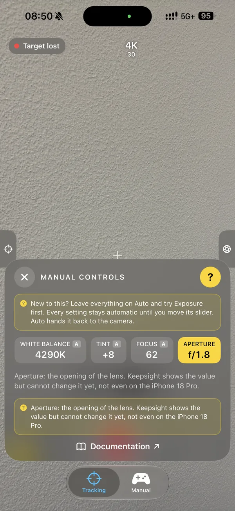

กล้องและรูปแบบ
โหมดวิดีโอและรูปภาพ ความละเอียด อัตราเฟรม เลนส์


วิดีโอหรือรูปภาพ
สวิตช์ทางซ้ายของชัตเตอร์ใช้เปลี่ยนโหมด กล้องจะตั้งค่าตัวเองใหม่ เหมือนในแอปกล้องของ Apple
- โหมดวิดีโอ: ซูมต่อเนื่องข้ามเลนส์ทั้งสาม และซูมอัตโนมัติ
- โหมดรูปภาพ: ความละเอียดภาพเต็มของเลนส์ที่เลือก ภาพในช่องมองภาพเป็น 4:3
การตั้งรูปแบบ
แตะส่วนแสดงรูปแบบที่กลางด้านบน แผงจะถูกล็อกระหว่างการบันทึก
วิดีโอ
| การตั้งค่า | ตัวเลือก |
|---|---|
| ความละเอียด | HD (1920 × 1080) หรือ 4K (3840 × 2160) |
| อัตราเฟรม | 24, 30 หรือ 60 เฟรมต่อวินาที และ 25 สำหรับ PAL |
| โคเดก | HEVC; ProRes 422 HQ เมื่อมี Keepsight Pro |
| การควบคุม | อัตโนมัติ Pro |
| เส้นตาราง | ปิด เปิด |
ภาพถ่าย
| การตั้งค่า | ตัวเลือก |
|---|---|
| รูปแบบ | HEIF หรือ RAW (Apple ProRAW ต้องใช้ Keepsight Pro) |
| ความละเอียด | ตามที่เลนส์ให้ได้ ดูด้านล่าง |
| การควบคุม | อัตโนมัติ Pro |
| เส้นตาราง | ปิด เปิด |
การควบคุมด้วยตนเอง
การควบคุมด้วยตนเอง: ตั้ง ISO ชัตเตอร์ สมดุลแสงขาว โทนสี และโฟกัสเอง แยกกันทีละค่า ต้องใช้ Keepsight Pro


หากต้องการเปิด ให้แตะส่วนแสดงรูปแบบด้านบนแล้วเปลี่ยน การควบคุม เป็น Pro คุณยังพบ การควบคุมด้วยตนเอง ได้ในแผงกล้อง จากตรงนั้นใช้งานได้แม้ขณะกำลังบันทึกวิดีโอ
หน้าต่างมีขนาดเตี้ยและไม่ทำให้ภาพมืดลง คุณจึงเห็นทุกการเปลี่ยนแปลงทันที ตัว “A” เล็ก ๆ กำกับทุกค่าที่กล้องยังตั้งเองอยู่ ทันทีที่คุณเลื่อนแถบ ค่านั้นจะถูกตรึงไว้ อัตโนมัติ คืนค่านั้นให้กล้อง ส่วน อัตโนมัติทั้งหมด รีเซ็ตทั้งหมด ค่าของคุณใช้กับทั้งรูปภาพและวิดีโอ และจะคงอยู่จนกว่าคุณจะเปลี่ยน
เพิ่งเริ่มใช้ใช่ไหม ปล่อยทุกอย่างไว้ที่อัตโนมัติแล้วลองการรับแสงก่อน การตั้งค่าแต่ละอย่างจะเป็นอัตโนมัติจนกว่าคุณจะเลื่อนแถบของมัน อัตโนมัติจะคืนการตั้งค่านั้นให้กล้อง
การรับแสง
การรับแสง: ทำให้ทั้งภาพสว่างขึ้นหรือมืดลง โดยกล้องยังวัดแสงเองต่อไป เป็นตัวปรับที่ง่ายที่สุดสำหรับเริ่มต้น
ใช้เมื่อภาพออกมามืดหรือสว่างเกินไป เช่น ตัวแบบที่อยู่หน้าท้องฟ้าสว่าง หิมะ หรือเวที ค่าบวกทำให้สว่างขึ้น ค่าลบทำให้มืดลง ทีละหนึ่งในสามสต็อปตั้งแต่ −3 ถึง +3 ใช้ได้แม้ขณะที่ ISO หรือชัตเตอร์ถูกตรึงไว้
ISO
ISO: ความไวของเซ็นเซอร์ ค่าสูงขึ้นทำให้ภาพสว่างขึ้นแต่มีเม็ดเกรนมากขึ้น ควรตั้งให้ต่ำที่สุดเท่าที่แสงเอื้อ
เลือก ISO ต่ำในแสงกลางวันเพื่อภาพที่สะอาดที่สุด และเพิ่มขึ้นเมื่ออยู่ในอาคารหรือตอนพลบค่ำ หากคุณตรึงเฉพาะ ISO Keepsight จะปรับเวลาชัตเตอร์เองเพื่อให้ความสว่างถูกต้อง
ชัตเตอร์
ชัตเตอร์: ระยะเวลาที่แต่ละภาพรับแสง เวลาสั้น เช่น 1/1000 หยุดการเคลื่อนไหวที่เร็ว เวลานานขึ้นรับแสงได้มากขึ้นแต่ทำให้การเคลื่อนไหวเบลอ
ใช้ 1/1000 หรือสั้นกว่านั้นสำหรับนก กีฬา และเครื่องบิน เพื่อให้คมชัด สำหรับวิดีโอที่ดูเป็นธรรมชาติ ให้ใช้ประมาณสองเท่าของอัตราเฟรม เช่น 1/60 ที่ 30 เฟรมต่อวินาที หากคุณตรึงเฉพาะชัตเตอร์ Keepsight จะปรับ ISO เอง ในวิดีโอ เวลาจะนานกว่าหนึ่งเฟรมไม่ได้ ส่วนในโหมดรูปภาพทำได้ถึง 1/4 วินาที
สมดุลแสงขาว
สมดุลแสงขาว: ปรับสีให้เข้ากับแสงเพื่อให้สีขาวดูขาว แตะสัญลักษณ์หลอดไฟ ดวงอาทิตย์ เมฆ หรือร่มเงา หรือกำหนดค่าเป็นเคลวิน
ตรึงไว้เมื่อสีเปลี่ยนระหว่างการบันทึก เช่น เมื่อกล้องแพนจากแดดเข้าสู่ร่มเงา หรือเมื่อแสงจากหลอดไฟดูเหลืองเกินไป สัญลักษณ์ตั้งค่า 3200 K สำหรับหลอดไส้ 4000 K สำหรับแสงฟลูออเรสเซนต์ 5600 K สำหรับแสงแดด 6500 K สำหรับท้องฟ้ามีเมฆ และ 7500 K สำหรับร่มเงา แถบเลื่อนครอบคลุมตั้งแต่ 2500 K ถึง 10000 K
โทนสี
โทนสี: เลื่อนสีระหว่างเขียวกับม่วงแดง โดยปกติจำเป็นเฉพาะใต้แสงประดิษฐ์
ใช้เมื่อผิวหรือผนังสีขาวดูอมเขียวหรืออมชมพู ซึ่งมักเกิดขึ้นใต้หลอด LED หรือหลอดฟลูออเรสเซนต์ เลื่อนแถบจนกว่าสีขาวจะกลับมาดูเป็นกลาง เมื่อสมดุลแสงขาวถูกตรึงและโทนสีอยู่ที่อัตโนมัติ โทนสีจะคงค่าที่วัดได้ล่าสุด และกลับกันก็เช่นกัน
โฟกัส
โฟกัส: กำหนดระยะที่ชัด จากใกล้ทางซ้ายไปไกลทางขวา
ใช้เมื่อออโต้โฟกัสวืดไปมา เช่น ผ่านรั้ว หน้าต่าง หรือกิ่งไม้ หรือกับตัวแบบขนาดเล็กที่อยู่หน้าท้องฟ้า ตั้งระยะครั้งเดียวแล้วจะคงอยู่ตรงนั้น ตัวแบบที่อยู่ไกลอย่างเครื่องบินจะอยู่ที่ปลายด้านขวาของแถบเลื่อน
รูรับแสง
รูรับแสง: ช่องเปิดของเลนส์ Keepsight แสดงค่าได้แต่ยังเปลี่ยนไม่ได้ แม้แต่บน iPhone 18 Pro
เส้นตาราง
เส้นตาราง: เส้นสองเส้นในแต่ละแนวช่วยให้เส้นขอบฟ้าตรงและจัดวางตัวแบบได้ เส้นจะไม่ถูกบันทึกในรูปภาพหรือวิดีโอ
เปิดได้ในแผงรูปแบบที่ เส้นตาราง ทุกคนใช้ได้ แม้ไม่มี Pro วางตัวแบบไว้ที่จุดตัดจุดใดจุดหนึ่งจากสี่จุดเพื่อภาพที่สมดุล และใช้เส้นช่วยให้เส้นขอบฟ้าและอาคารตรง
ความคมชัด: AF และโฟกัสที่ตามวัตถุ
AF: ปุ่ม AF ที่ปลายแถบเลนส์จะโฟกัสหนึ่งครั้งที่วัตถุที่ติดตาม หรือที่กลางภาพเมื่อไม่ได้ติดตามอะไร ใช้ฟรีสำหรับทุกคน
แตะเพื่อโฟกัส: แตะที่ใดก็ได้ในช่องมองภาพ Keepsight จะโฟกัสและวัดแสงตรงนั้นหนึ่งครั้ง มีกรอบสี่เหลี่ยมสีเหลืองแสดง และเลือกวัตถุที่คุณแตะ หากคุณตั้งโฟกัสหรือค่าแสงเอง การตั้งค่านั้นจะคงอยู่ ใช้ฟรีสำหรับทุกคน
โฟกัสตามวัตถุ: ขณะ Keepsight ติดตามวัตถุ ความคมชัดจะอยู่ที่วัตถุนั้น แม้จะเคลื่อนไปที่ขอบภาพ เปิดได้ในการตั้งค่าที่ การตรวจภาพ → โฟกัสตามวัตถุ ฟีเจอร์จะหยุดชั่วคราวทันทีที่คุณปรับโฟกัสเอง ต้องใช้ Keepsight Pro
เครื่องมือตรวจภาพ
เครื่องมือตรวจภาพแสดงให้เห็นว่าภาพจริงเป็นอย่างไร เหมือนกล้องระดับมืออาชีพ แสดงบนหน้าจอเท่านั้นและไม่ถูกบันทึกลงรูปหรือวิดีโอ เปิดได้ในการตั้งค่าที่ การตรวจภาพ ต้องใช้ Keepsight Pro
สวิตช์ด่วน: เปิดเมนูกล้องด้วยปุ่มกลมทางขวา ใน การตรวจภาพ คุณเปิดปิดเครื่องมือแต่ละอย่างได้ด้วยการแตะครั้งเดียว แตะไทล์กรอบอีกครั้งเพื่อเปลี่ยนสัดส่วน
| เครื่องมือ | สิ่งที่แสดง |
|---|---|
| ซีบรา | แถบขาวเฉียงบนบริเวณที่สว่างเกินจนเสียรายละเอียด ตั้งเกณฑ์ด้วย ระดับซีบรา ตั้งแต่ 75 ถึง 100 % หากเห็นแถบบนใบหน้าหรือท้องฟ้า ให้ลดค่าแสง |
| Focus peaking | ระบายสีขอบที่คมชัด มีประโยชน์เมื่อโฟกัสเอง: หมุนโฟกัสจนวัตถุสว่างขึ้น เลือกสีที่เห็นชัดที่สุด: เขียว แดง น้ำเงิน หรือเหลือง |
| ฮิสโทแกรม | การกระจายของความสว่าง จากมืดทางซ้ายไปสว่างทางขวา ภูเขาที่ชิดขอบขวาหมายถึงแสงเกิน ชิดขอบซ้ายหมายถึงแสงน้อย |
| มาตรวัดเสียง | ไทล์เสียง: แสดงระดับเสียงขณะที่คุณพูด แม้ก่อนบันทึก สีเขียวคือดี สีเหลืองคือดัง สีแดงคือดังเกินไป จะมีคำเตือนเมื่อเสียงเบาเกินไป ดังเกินไป หรือแตก การแสดงผลนี้จะไม่ปรากฏในวิดีโอ |
| กรอบสัดส่วน | ทำให้ทุกอย่างนอกสัดส่วนที่เลือกมืดลง: 9:16 สำหรับ Reels และ Shorts, 4:5 และ 1:1 สำหรับโพสต์, 4:3, 16:9 และสัดส่วนภาพยนตร์ 1.85:1 และ 2.39:1 ตัววิดีโอยังเก็บสัดส่วนเต็ม จึงครอปภายหลังได้ |
เสียง
เสียงที่ดีสำคัญพอ ๆ กับภาพที่ดี โดยเฉพาะเมื่อคุณพูดกับกล้อง การตั้งค่าเหล่านี้อยู่ในเมนูกล้องที่ เสียง ในโหมดวิดีโอ ต้องใช้ Keepsight Pro
| การตั้งค่า | ความหมาย |
|---|---|
| ใช้ AirPods เป็นไมโครโฟน | บันทึกเสียงของคุณด้วย AirPods แทนไมโครโฟนของ iPhone ในคุณภาพสูง เหมาะเมื่อคุณยืนอยู่ไกลจาก iPhone |
| เสียงตามตำแหน่ง | บันทึกเสียงแบบ 3 มิติ หลังจากนั้นคุณสามารถแยกเสียงพูดกับเสียงรอบข้างในแอปรูปภาพด้วยการผสมเสียงได้ ต้องใช้ iPhone 16 ขึ้นไปและไมโครโฟนในตัว |
การใช้ AirPods เป็นไมโครโฟนต้องใช้ iOS 26 และ AirPods ที่มีชิป H2 เช่น AirPods Pro 2 หรือ AirPods 4 เสียงตามตำแหน่งและ AirPods เป็นไมโครโฟนใช้พร้อมกันไม่ได้ วิดีโอโอเวอร์เลย์และวิดีโอกิมบอลเสมือนยังคงเป็นเสียงสเตอริโอปกติ
บันทึกคู่: วิดีโอพร้อมภาพเซลฟี่
บันทึกคู่: กล้องหลังถ่ายและติดตามวัตถุ ขณะที่กล้องหน้าถ่ายคุณไปพร้อมกัน เซลฟี่ของคุณจะแสดงเป็นภาพเล็กที่มุมขวาล่างของวิดีโอ
เปิดใช้ในโหมดวิดีโอด้วยไทล์ คู่ ในแผงกล้อง เมื่อเปิด บันทึกวิดีโอเซลฟี่แยกด้วย ในการตั้งค่า เซลฟี่ของคุณจะถูกบันทึกเป็นวิดีโอแยกด้วย เพื่อให้คุณตัดต่อเองได้ภายหลัง ขณะเปิดบันทึกคู่ ช่องมองภาพจะแสดงเซลฟี่ของคุณที่มุมขวาบน และมุมซ้ายล่างเมื่ออยู่ในแนวนอน
- กล้องทั้งสองบันทึกได้สูงสุด 1080p ที่ 30 เฟรมต่อวินาที ไม่มี 4K หรือ ProRes กล้องหลังใช้เลนส์หลัก ซูมเป็นแบบดิจิทัล
- การติดตาม ท่าทาง คำสั่งเสียง และกิมบอลยังทำงานตามปกติ
- เฉพาะในโหมดวิดีโอ ในโหมดภาพถ่าย การบันทึกคู่จะหยุดชั่วคราวและกลับมาเมื่อคุณกลับสู่โหมดวิดีโอ การสลับไปกล้องหน้าจะสิ้นสุดการบันทึกคู่
- หาก iPhone ร้อน ภาพเซลฟี่จะปิดเอง
- ต้องใช้ Keepsight Pro และ iPhone ที่ถ่ายด้วยกล้องทั้งสองพร้อมกันได้ หากเครื่องของคุณทำไม่ได้ Keepsight จะแจ้งให้ทราบ
ลดความร้อนขณะบันทึก
การบันทึกนานกลางแดดทำให้ iPhone ทุกเครื่องร้อน เมื่อเปิด ลดความร้อนขณะบันทึก Keepsight จะประหยัดพลังงานระหว่างบันทึก และคืนทุกอย่างเมื่อคุณหยุด เปิดไว้ตั้งแต่ต้นและใช้ฟรีสำหรับทุกคน
- หน้าจอจะหรี่ลงหลัง 10 วินาที แตะเพื่อปลุก การบันทึกยังดำเนินต่อ
- ขณะที่วัตถุนิ่ง การตรวจจับจะทำงานน้อยลง ทันทีที่เคลื่อนไหว ก็จะกลับมาทำงานเต็มความเร็ว
- ท่าทางจะถูกตรวจน้อยลง การสั่งงานด้วยเสียงยังเปิดอยู่
- เครื่องมือตรวจภาพและภาพสดบน Apple Watch จะอัปเดตน้อยลง
หาก iPhone ยังร้อนขึ้น Keepsight จะทำเพิ่มอีกขั้น: ปิดภาพเซลฟี่ก่อน จากนั้นหยุดวิดีโอโอเวอร์เลย์ชั่วคราว แล้วการตรวจจับจะช้าลง หาก iPhone ร้อนเกินไป การติดตามจะหยุดและบันทึกวิดีโอไว้
กล้องหน้าและเซลฟี่
ปุ่มที่มีลูกศรสองอันข้างภาพย่อสลับไปยังกล้องหน้า คุณเห็นตัวเองแบบกลับด้านเหมือนกระจก เช่นเดียวกับแอปกล้องของ Apple สิ่งที่ถ่ายจะบันทึกแบบไม่กลับด้าน ตามที่คนอื่นเห็นคุณ สำหรับรูปภาพคุณเปลี่ยนได้
- วิดีโอและรูปภาพ: วิดีโอสูงสุด 4K รูปภาพที่ความละเอียดเต็มของกล้องหน้า
- ตัวแบบ: เมื่อสลับ Keepsight จะเปลี่ยนเป็น ใบหน้า และเล็งที่ดวงตาของคุณ หากมีกิมบอล มันจะตามคุณหน้ากล้องหน้าด้วย
- แถบเซลฟี่ในโหมดรูปภาพ: เหนือชัตเตอร์ คุณเลือก ภาพเดียว, รอยยิ้ม หรือ สายตา ได้ Smile และ Look จะพร้อมทำงานทันทีที่แตะ: Keepsight ถ่ายภาพเองเมื่อทุกคนยิ้มหรือมองกล้อง ทั้งสองเป็นส่วนหนึ่งของ Keepsight Pro
- นับถอยหลัง: เมื่อใช้กล้องหน้า หน้าจอจะกะพริบแทนไฟ
- ใช้ไม่ได้: การเลือกเลนส์และซูมอัตโนมัติ เพราะกล้องหน้ามีเลนส์เดียว
ภาพบุคคล
ภาพบุคคล ในแถบเซลฟี่หรือในแผงกล้องเป็นส่วนหนึ่งของ Keepsight Pro
- รูปภาพ: Keepsight บันทึกภาพพร้อมข้อมูลความลึกของกล้องหน้า จากนั้นคุณปรับความเบลอของพื้นหลังได้ในแอปรูปภาพ ภาพบุคคลเป็น HEIF ที่ 12 MP ใช้ ProRAW ไม่ได้ในกรณีนี้
- วิดีโอ: Keepsight เลือกรูปแบบที่รองรับเอฟเฟกต์ภาพถ่ายบุคคลของ Apple โดยทั่วไปคือ 1080p ที่ 30 เฟรม ตัวเอฟเฟกต์ต้องเปิดในศูนย์ควบคุมที่ เอฟเฟ็กต์วิดีโอ ซึ่ง Keepsight จะเปิดให้คุณ ที่นั่นยังมีแสงสตูดิโอและการจัดให้อยู่ตรงกลาง ขึ้นอยู่กับ iPhone ของคุณ
กลับด้านเซลฟี่ ในแผงกล้องจะบันทึกภาพเซลฟี่ตามที่คุณเห็นตัวเองในช่องมองภาพ
สลับกล้องระหว่างบันทึกวิดีโอไม่ได้
เลนส์และเมกะพิกเซล
| เลนส์ | ความละเอียดภาพ |
|---|---|
| .5× อัลตร้าไวด์ | 12 MP; สูงสุด 48 MP ตั้งแต่ iPhone 16 Pro |
| 1× กล้องหลัก | 12, 24 หรือ 48 MP ส่วน RAW คือ 12 หรือ 48 MP |
| เทเลโฟโต้ | 12 MP; สูงสุด 48 MP ตั้งแต่ iPhone 17 Pro |
นี่คือข้อมูลจำเพาะของ Apple สำหรับรุ่น Pro ตั้งแต่ iPhone 15 Pro จนถึงตอนนี้ Keepsight ทดสอบแล้วเฉพาะบน iPhone 15 Pro Max และ iPhone 17 Pro Max รุ่นอื่นให้ความละเอียดน้อยกว่าในบางเลนส์ แผงรูปแบบจะแสดงเฉพาะสิ่งที่เลนส์ปัจจุบันของ iPhone ของคุณให้ได้จริงเสมอ
เมื่อสั่งด้วยเสียง Keepsight จะสลับไปโหมดรูปหรือวิดีโอเอง ส่วนท่าทางจะทำงานตามโหมดที่ตั้งไว้ เฉพาะรูปที่ถ่ายระหว่างบันทึกวิดีโอเท่านั้นที่มีขนาดประมาณ 10 MP